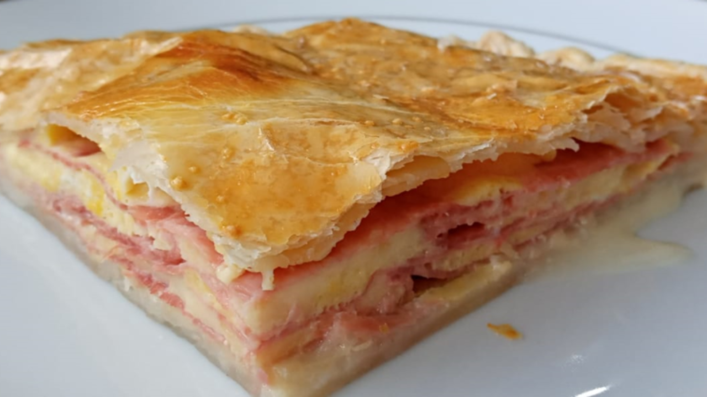

Tarta

Una deliciosa tarta de jamon y queso
Hoy les mostrare como hacer la mas rica y simple de las tartas.
En x simples pasos tendremos un delicioso plato ideal para comer mirando una pelicula o de bajon.
Para hacerla necesitaremos:
- Jamon: 200g
- Queso: 200g
- Masa: un par de tapas
- Horno: Que funcione bien nada mas
- Hambre: Esto es opcional, porque es tan rica que hasta sin hambre la comes igual!
- huevos: Media docena
- Sal y pimienta a gusto